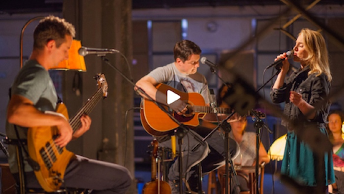

Jananas live na ČT art
1.12.2016 | Jananas
Na ČT art měl 19. ledna premiéru pořad Folk Factory, kde jsme simulovali neformální a uvolněnou „studio session“. Přidali jsme samozřejmě pár vtipných vět, hrstku kiksů a špetku rozumů. Jak to šlo, zkontrolujte zde.

Sdílej
Komentuj
Jananas live na ČT art
1.12.2016 | Jananas
Dvoumetrový režisér s šíleným chechotem běhal po setmělém prostoru s knihou namočenou v benzínu a všude za sebou nechával vysoce hořlavou cestičku. Vedla směrem k našim zaparkovaným autům. Drobný, veselý pomocník Ludvík s rozsvícenou čelovkou kmital tmou jako hbitá malá světluška. Tu přiskočil, aby rozdmýchal skomírající plamen, tu posunul hořící knihu blíže do záběru a když si Jan Látal postěžoval, že je moc tma, během tří minut vyrobil louč, za kterou by se nemusel stydět ani král Artuš.
Najednou se prostorem ozval Janův křik : „Utíkejte! Všichni pryč! Utíkejte! Bouchne to!!”
Sdílej
Komentuj